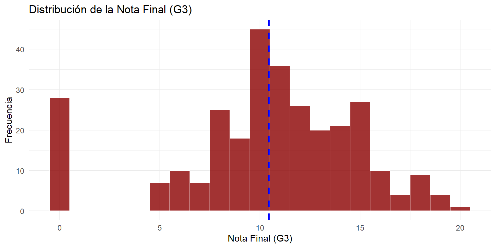
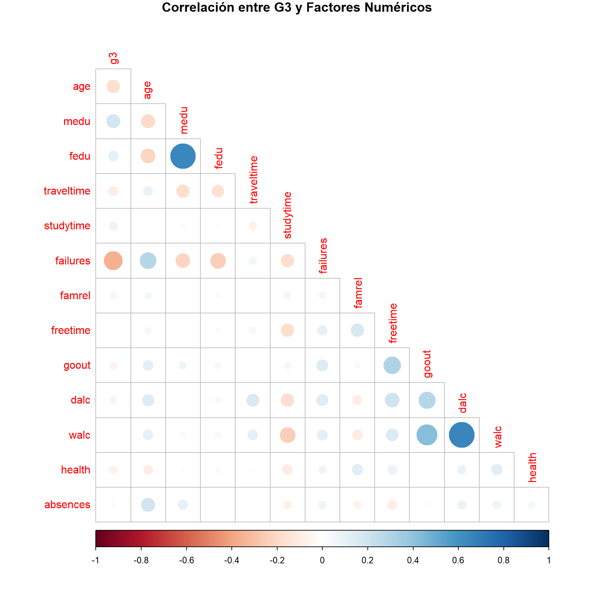
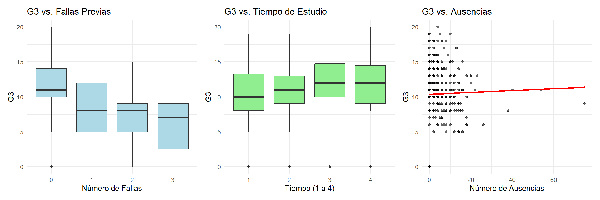
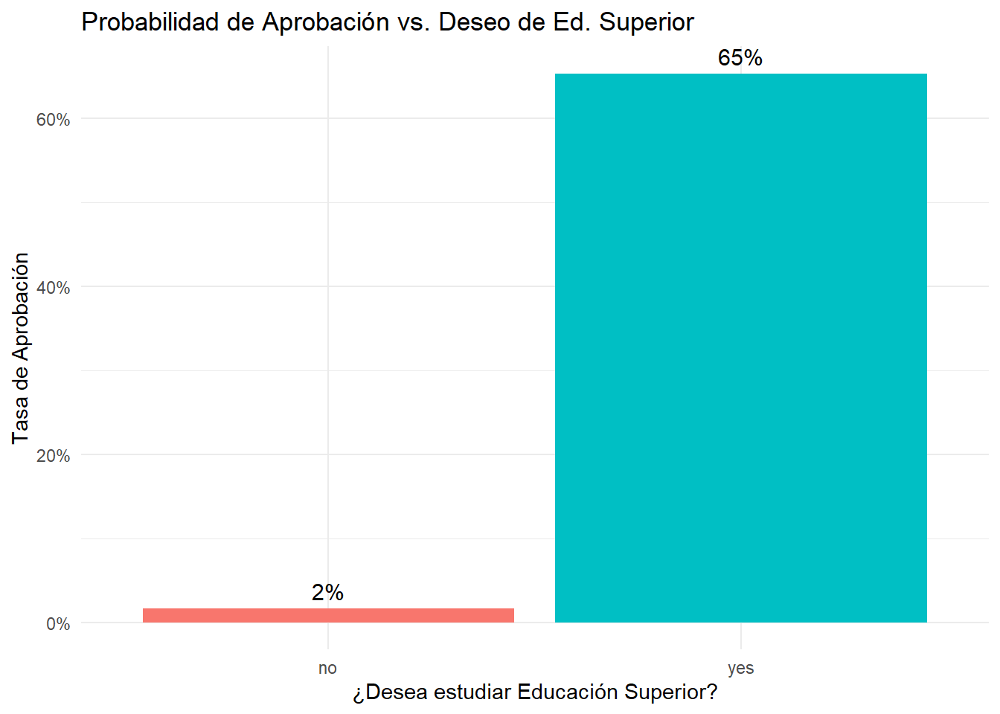
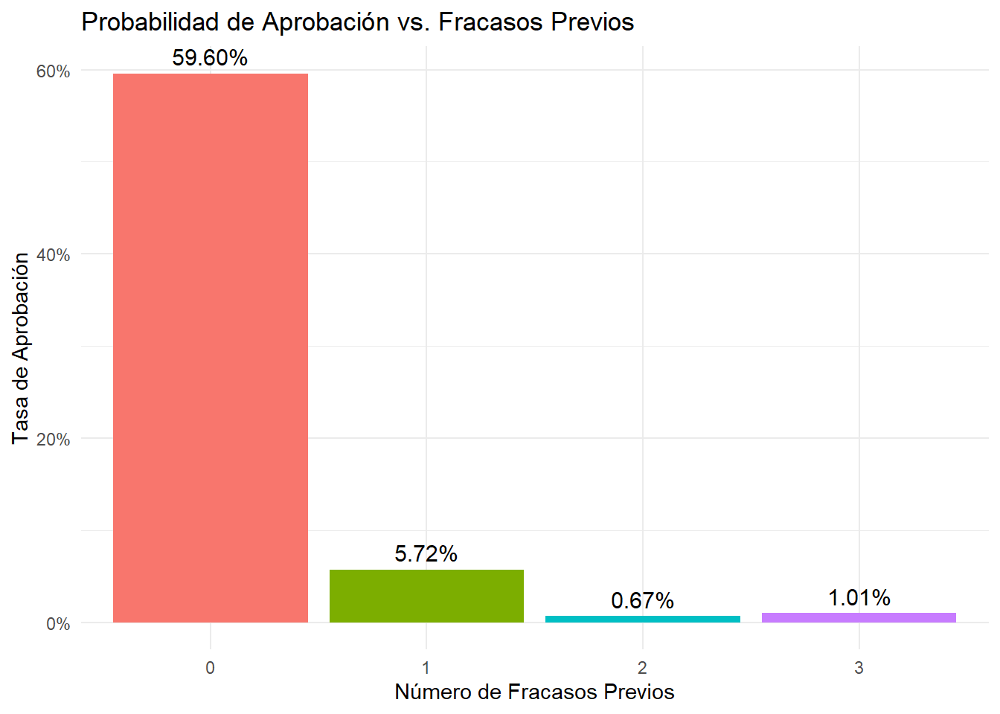
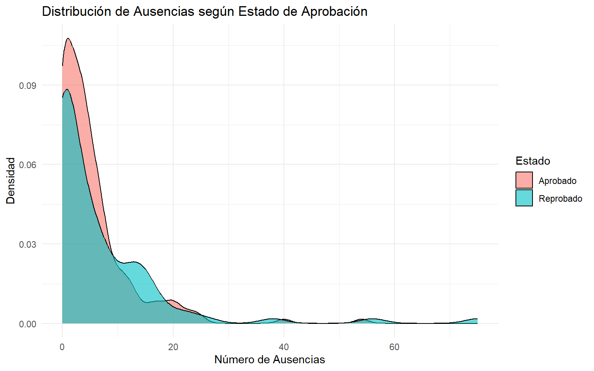
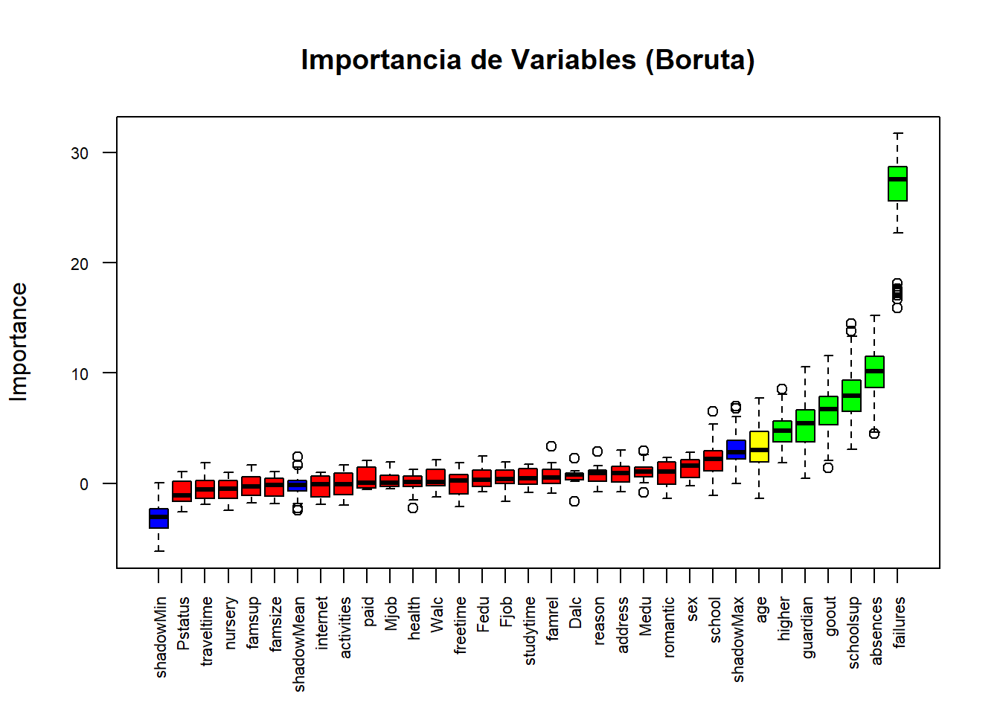

| Variable | Tipo | Valores | Descripción |
|---|---|---|---|
| school | Categórica | GP, MS | Escuela del estudiante (GP: Gabriel Pereira, MS: Mousinho da Silveira) |
| sex | Categórica | F, M | Sexo del estudiante (F: Femenino, M: Masculino) |
| age | Numérica | 15-22 | Edad del estudiante en años |
| address | Categórica | U, R | Tipo de domicilio del estudiante (U: Urbano, R: Rural) |
Análisis Predictivo de Rendimiento Estudiantil
Introducción
El conjunto de datos Student Performance contiene información detallada sobre el rendimiento académico de estudiantes de secundaria en la asignatura de Matemáticas, junto con una amplia gama de variables demográficas, sociales, familiares y conductuales. Los datos fueron recopilados mediante encuestas en dos escuelas secundarias públicas de Portugal y están disponibles en el repositorio UCI Machine Learning.
Basados en la descripción del respositorio, el rendimiento académico de los estudiantes no depende únicamente de su capacidad cognitiva, sino que está fuertemente influenciado por factores contextuales como el entorno familiar, los hábitos de estudio, el apoyo escolar, las relaciones sociales y las condiciones socioeconómicas. En este contexto, identificar tempranamente a los estudiantes en riesgo de reprobación permite a las instituciones educativas implementar estrategias de intervención oportuna, optimizando recursos y promoviendo la equidad en el aprendizaje. Por ello, es crucial desarrollar modelos predictivos que, a partir de variables observables al inicio del curso, puedan anticipar el resultado académico final.
El conjunto de datos incluye 395 observaciones y 33 variables, entre las que se encuentran:
Demográficas: edad, género, tipo de residencia (urbana o rural).
Familiares: nivel educativo de los padres, ocupación, tipo de tutor, calidad de las relaciones familiares.
Académicas: número de ausencias, fracasos previos, apoyo escolar extra, acceso a internet.
De comportamiento: tiempo de estudio, frecuencia de salidas con amigos, consumo de alcohol, tiempo libre.
De desempeño: calificaciones en el primer (G1), segundo (G2) y tercer período (G3).
En este proyecto de clasificación binaria; el objetivo es detectar si un estudiante aprobará o reprobará, transformando la variable objetivo continua (G3) en una variable categórica binaria. Así, en lugar de predecir la calificación exacta, se define la variable respuesta Pass como:
\[ \texttt{Pass} =\begin{cases}\text{yes}, & \text{si } \texttt{G3} \geq 10 \\\text{no}, & \text{si } \texttt{G3} < 10\end{cases} \]
Este umbral (10 sobre 20) corresponde al criterio tradicional de aprobación en el sistema educativo portugués . Es importante destacar que, para preservar la validez de la predicción temprana, las calificaciones intermedias (G1 y G2) se excluyen del conjunto de predictores, evitando así cualquier fuga de información y asegurando que el modelo se base únicamente en factores observables antes del cierre del curso.
Business understanding
Planteamos algunas preguntas sobre nuestros datos:
- ¿Un mayor nivel educativo de los padres se asocia con una mayor probabilidad de aprobación?
- ¿El número de fracasos previos es el predictor más fuerte de reprobación?
- ¿El apoyo escolar extra mejora significativamente las probabilidades de aprobación?
- ¿Una mayor frecuencia de salidas con amigos se asocia con menor rendimiento?
Data understanding
Descripción del Conjunto de Datos
El proyecto utiliza el conjunto de datos de Rendimiento Estudiantil que contiene 395 estudiantes con 33 atributos que describen variable de tipo: demografía, contexto social y registros académicos.
| Variable | Tipo | Valores | Descripción |
|---|---|---|---|
| reason | Categórica | home, reputation, course, other | Razón para elegir esta escuela |
| traveltime | Ordinal | 1-4 | Tiempo de viaje casa-escuela (1: <15min, 2: 15-30min, 3: 30min-1h, 4: >1h) |
| studytime | Ordinal | 1-4 | Tiempo de estudio semanal (1: <2h, 2: 2-5h, 3: 5-10h, 4: >10h) |
| failures | Numérica | 0-4 | Número de fallos académicos previos |
| schoolsup | Categórica | yes, no | Recibe apoyo educativo extra de la escuela |
| famsup | Categórica | yes, no | Recibe apoyo educativo de la familia |
| paid | Categórica | yes, no | Toma clases extra pagadas en matemáticas |
| activities | Categórica | yes, no | Participa en actividades extracurriculares |
| nursery | Categórica | yes, no | Asistió a guardería |
| higher | Categórica | yes, no | Desea seguir educación superior |
| absences | Numérica | 0-93 | Número de ausencias escolares |
| Variable | Tipo | Valores | Descripción |
|---|---|---|---|
| internet | Categórica | yes, no | Tiene acceso a internet en casa |
| romantic | Categórica | yes, no | Está en una relación romántica |
| famrel | Ordinal | 1-5 | Calidad de relaciones familiares (1: muy mala - 5: excelente) |
| freetime | Ordinal | 1-5 | Tiempo libre después de la escuela (1: muy bajo - 5: muy alto) |
| goout | Ordinal | 1-5 | Frecuencia de salidas con amigos (1: muy baja - 5: muy alta) |
| Dalc | Ordinal | 1-5 | Consumo de alcohol entre semana (1: muy bajo - 5: muy alto) |
| Walc | Ordinal | 1-5 | Consumo de alcohol en fin de semana (1: muy bajo - 5: muy alto) |
| health | Ordinal | 1-5 | Estado de salud actual (1: muy malo - 5: muy bueno) |
| school | sex | age | address | famsize | pstatus | medu | fedu | mjob | fjob | reason | guardian | traveltime | studytime | failures | schoolsup | famsup | paid | activities | nursery | higher | internet | romantic | famrel | freetime | goout | dalc | walc | health | absences | g1 | g2 | g3 |
|---|---|---|---|---|---|---|---|---|---|---|---|---|---|---|---|---|---|---|---|---|---|---|---|---|---|---|---|---|---|---|---|---|
| GP | F | 18 | U | GT3 | A | 4 | 4 | at_home | teacher | course | mother | 2 | 2 | 0 | yes | no | no | no | yes | yes | no | no | 4 | 3 | 4 | 1 | 1 | 3 | 6 | 5 | 6 | 6 |
| GP | F | 17 | U | GT3 | T | 1 | 1 | at_home | other | course | father | 1 | 2 | 0 | no | yes | no | no | no | yes | yes | no | 5 | 3 | 3 | 1 | 1 | 3 | 4 | 5 | 5 | 6 |
| GP | F | 15 | U | LE3 | T | 1 | 1 | at_home | other | other | mother | 1 | 2 | 3 | yes | no | yes | no | yes | yes | yes | no | 4 | 3 | 2 | 2 | 3 | 3 | 10 | 7 | 8 | 10 |
| GP | F | 15 | U | GT3 | T | 4 | 2 | health | services | home | mother | 1 | 3 | 0 | no | yes | yes | yes | yes | yes | yes | yes | 3 | 2 | 2 | 1 | 1 | 5 | 2 | 15 | 14 | 15 |
| GP | F | 16 | U | GT3 | T | 3 | 3 | other | other | home | father | 1 | 2 | 0 | no | yes | yes | no | yes | yes | no | no | 4 | 3 | 2 | 1 | 2 | 5 | 4 | 6 | 10 | 10 |
| GP | M | 16 | U | LE3 | T | 4 | 3 | services | other | reputation | mother | 1 | 2 | 0 | no | yes | yes | yes | yes | yes | yes | no | 5 | 4 | 2 | 1 | 2 | 5 | 10 | 15 | 15 | 15 |
| GP | M | 16 | U | LE3 | T | 2 | 2 | other | other | home | mother | 1 | 2 | 0 | no | no | no | no | yes | yes | yes | no | 4 | 4 | 4 | 1 | 1 | 3 | 0 | 12 | 12 | 11 |
| GP | F | 17 | U | GT3 | A | 4 | 4 | other | teacher | home | mother | 2 | 2 | 0 | yes | yes | no | no | yes | yes | no | no | 4 | 1 | 4 | 1 | 1 | 1 | 6 | 6 | 5 | 6 |
| GP | M | 15 | U | LE3 | A | 3 | 2 | services | other | home | mother | 1 | 2 | 0 | no | yes | yes | no | yes | yes | yes | no | 4 | 2 | 2 | 1 | 1 | 1 | 0 | 16 | 18 | 19 |
| GP | M | 15 | U | GT3 | T | 3 | 4 | other | other | home | mother | 1 | 2 | 0 | no | yes | yes | yes | yes | yes | yes | no | 5 | 5 | 1 | 1 | 1 | 5 | 0 | 14 | 15 | 15 |
| Name | Piped data |
| Number of rows | 395 |
| Number of columns | 33 |
| _______________________ | |
| Column type frequency: | |
| character | 17 |
| numeric | 16 |
| ________________________ | |
| Group variables | None |
Variable type: character
| skim_variable | n_missing | complete_rate | min | max | empty | n_unique | whitespace |
|---|---|---|---|---|---|---|---|
| school | 0 | 1 | 2 | 2 | 0 | 2 | 0 |
| sex | 0 | 1 | 1 | 1 | 0 | 2 | 0 |
| address | 0 | 1 | 1 | 1 | 0 | 2 | 0 |
| famsize | 0 | 1 | 3 | 3 | 0 | 2 | 0 |
| pstatus | 0 | 1 | 1 | 1 | 0 | 2 | 0 |
| mjob | 0 | 1 | 5 | 8 | 0 | 5 | 0 |
| fjob | 0 | 1 | 5 | 8 | 0 | 5 | 0 |
| reason | 0 | 1 | 4 | 10 | 0 | 4 | 0 |
| guardian | 0 | 1 | 5 | 6 | 0 | 3 | 0 |
| schoolsup | 0 | 1 | 2 | 3 | 0 | 2 | 0 |
| famsup | 0 | 1 | 2 | 3 | 0 | 2 | 0 |
| paid | 0 | 1 | 2 | 3 | 0 | 2 | 0 |
| activities | 0 | 1 | 2 | 3 | 0 | 2 | 0 |
| nursery | 0 | 1 | 2 | 3 | 0 | 2 | 0 |
| higher | 0 | 1 | 2 | 3 | 0 | 2 | 0 |
| internet | 0 | 1 | 2 | 3 | 0 | 2 | 0 |
| romantic | 0 | 1 | 2 | 3 | 0 | 2 | 0 |
Variable type: numeric
| skim_variable | n_missing | complete_rate | mean | sd | p0 | p25 | p50 | p75 | p100 | hist |
|---|---|---|---|---|---|---|---|---|---|---|
| age | 0 | 1 | 16.70 | 1.28 | 15 | 16 | 17 | 18 | 22 | ▇▅▅▁▁ |
| medu | 0 | 1 | 2.75 | 1.09 | 0 | 2 | 3 | 4 | 4 | ▁▃▆▆▇ |
| fedu | 0 | 1 | 2.52 | 1.09 | 0 | 2 | 2 | 3 | 4 | ▁▆▇▇▇ |
| traveltime | 0 | 1 | 1.45 | 0.70 | 1 | 1 | 1 | 2 | 4 | ▇▃▁▁▁ |
| studytime | 0 | 1 | 2.04 | 0.84 | 1 | 1 | 2 | 2 | 4 | ▅▇▁▂▁ |
| failures | 0 | 1 | 0.33 | 0.74 | 0 | 0 | 0 | 0 | 3 | ▇▁▁▁▁ |
| famrel | 0 | 1 | 3.94 | 0.90 | 1 | 4 | 4 | 5 | 5 | ▁▁▃▇▅ |
| freetime | 0 | 1 | 3.24 | 1.00 | 1 | 3 | 3 | 4 | 5 | ▁▃▇▆▂ |
| goout | 0 | 1 | 3.11 | 1.11 | 1 | 2 | 3 | 4 | 5 | ▂▆▇▅▃ |
| dalc | 0 | 1 | 1.48 | 0.89 | 1 | 1 | 1 | 2 | 5 | ▇▂▁▁▁ |
| walc | 0 | 1 | 2.29 | 1.29 | 1 | 1 | 2 | 3 | 5 | ▇▅▅▃▂ |
| health | 0 | 1 | 3.55 | 1.39 | 1 | 3 | 4 | 5 | 5 | ▂▂▅▃▇ |
| absences | 0 | 1 | 5.71 | 8.00 | 0 | 0 | 4 | 8 | 75 | ▇▁▁▁▁ |
| g1 | 0 | 1 | 10.91 | 3.32 | 3 | 8 | 11 | 13 | 19 | ▂▇▇▆▂ |
| g2 | 0 | 1 | 10.71 | 3.76 | 0 | 9 | 11 | 13 | 19 | ▁▂▇▆▂ |
| g3 | 0 | 1 | 10.42 | 4.58 | 0 | 8 | 11 | 14 | 20 | ▂▃▇▅▁ |
Este conjunto de datos contiene información sobre 395 estudiantes, sin valores faltantes. Incluye 33 variables que describen aspectos personales, familiares, sociales y académicos. Hay 17 variables categóricas, como el género, la escuela o el motivo para elegir esta, y 16 numéricas, como edad, tiempo de estudio, número de ausencias y calificaciones en los tres periodos (g1, g2, g3). Todos los datos están completos, lo que permite un análisis confiable del rendimiento académico y los factores asociados.
Análisis Exploratorio de Datos (EDA)
Varibale \(G3\) sin ser binaria
Análisis Univariado de la Variable Objetivo (\(\text{G3}\))

### Estadísticas Descriptivas de G3| Media | Mediana | Min | Max |
|---|---|---|---|
| 10.43 | 11 | 0 | 20 |
La distribución de la nota final ($\text{G3}$) presenta un sesgo negativo (hacia la izquierda), ya que la Mediana (11) es ligeramente superior a la Media (10.42), aunque ambos valores son cercanos. El rango completo de notas es utilizado, yendo de $\text{0}$ (nota mínima) a $\text{20}$ (nota máxima). La presencia de una alta frecuencia de notas cero sugiere un número significativo de reprobados o no presentados.
Análisis Bivariado: Factores Numéricos vs. \(\text{G3}\)

Las correlaciones más fuertes y negativas se encuentran con
failures(-0.37) yage(-0.23). Los estudiantes con más fallas previas y de mayor edad tienden a tener notas \(\text{G3}\) más bajas.Existe una correlación positiva con la
medu(Educación de la Madre, 0.22) yfedu(Educación del Padre, 0.17).
Relaciones Gráficas de Factores Clave vs. \(\text{G3}\)

- Fallas Previas (
failures): Existe una relación negativa muy fuerte. A medida que el número de fallas previas aumenta (de 0 a \(>3\)), la mediana de \(\text{G3}\) cae drásticamente, validando que el historial académico es un predictor que puede ser muy útil.
Tiempo de Estudio (
studytime): La relación es positiva. Los estudiantes que dedican más tiempo a estudiar semanalmente (niveles 2, 3 y 4) muestran consistentemente una mediana de \(\text{G3}\) superior a aquellos que estudian menos de 2 horas (nivel 1).Ausencias (
absences): El gráfico de dispersión muestra una correlación muy débil con \(\text{G3}\), ya que la línea de tendencia es casi plana, lo que sugiere que el número de ausencias por sí solo no es un predictor lineal fuerte de la nota final para la mayoría de los estudiantes.
Análisis Bivariado: Factores Categóricos vs. \(\text{G3}\)

- Deseo de Educación Superior (
higher): Esta es la variable categórica más influyente. Los estudiantes que expresan un deseo de seguir estudios superiores (“yes”) tienen una mediana de \(\text{G3}\) significativamente más alta (alrededor de 12) que aquellos que no lo desean, lo que puede indicar la importancia de la motivación como predictor.
Sexo (
sex): Existe una diferencia sutil pero verificable en el rendimiento. Los estudiantes varones (M) registran una mediana de \(\text{G3}\) superior (11.00) a la de las estudiantes mujeres (F, 10.00).Apoyo Familiar (
famsup): El impacto de contar con apoyo familiar es mínimo. La diferencia en la mediana de \(\text{G3}\) entre los grupos es casi nula, lo que indica que es probable que esta variable sea un predictor débil para el modelado.
Respuesta preliminar a las preguntas de Business understanding
| Pregunta de Negocio | Variables Clave | Análisis del EDA | Conclusión Preliminar |
|---|---|---|---|
| ¿Un mayor nivel educativo de los padres se asocia con una mayor probabilidad de aprobación? | G3 vs. Medu y Fedu | Correlación positiva y moderada con G3 (Medu: 0.22, Fedu: 0.17). | Sí. Hay una asociación positiva. El nivel educativo de los padres se correlaciona con un mayor rendimiento. |
| ¿El número de fracasos previos es el predictor más fuerte de reprobación? | G3 vs. failures | Correlación más fuerte y negativa de todos los factores (-0.37). Caída drástica de la mediana de G3. | Sí. failures es el predictor de bajo rendimiento más potente entre los factores asociados. |
| ¿El apoyo escolar extra mejora significativamente las probabilidades de aprobación? | G3 vs. schoolsup | Mediana de G3 para estudiantes con apoyo (9.0) es inferior a la de sin apoyo (11.0). | Inconcluso. schoolsup es un indicador de riesgo, lo que sugiere que identifica a estudiantes con bajo rendimiento inicial. |
| ¿Una mayor frecuencia de salidas con amigos se asocia con menor rendimiento? | G3 vs. goout | Correlación negativa, pero débil (-0.13). Tendencia a la baja en G3 con más salidas. | Sí, existe una asociación negativa, pero su impacto es menor que otros factores, como failures o higher. |
Analisis EDA para varibale \(G3\) binaria.

El deseo de estudiar educación superior es el predictor más fuerte. Los estudiantes que responden ‘yes’ presentan una tasa de aprobación notablemente superior, exactamente del 65%, mientras que aquellos que responden ‘no’ tienen una tasa de aprobación de apenas 2%.

Existe una relación inversa crítica. Los estudiantes sin fracasos previos (0) tienen una tasa de aprobación de casi 60%. La tasa cae drásticamente a menos del 6% para aquellos con solo un fracaso previo, y la aprobación es casi nula para 2 o más fracasos. El impacto de los failures es importante.
Code
train_final_bin %>%
ggplot(aes(x = absences, fill = Status)) +
geom_density(alpha = 0.6) +
labs(title = "Distribución de Ausencias según Estado de Aprobación",
x = "Número de Ausencias",
y = "Densidad") +
guides(fill = guide_legend(title = "Estado")) +
theme_minimal()
La curva de densidad para los estudiantes ‘Reprobado’ está ligeramente desplazada a la derecha, lo que indica que tienen un número de ausencias marginalmente mayor que los ‘Aprobado’. Ambas curvas se superponen fuertemente, sugiriendo que las absences no son un predictor tan fuerte para la clasificación como los factores categóricos.
Code
# Convertir el target binario a numérico (0/1)
train_corr <- train_final_bin %>%
mutate(Status_num = as.numeric(Status == "Aprobado")) %>%
dplyr::select(Status_num, age, traveltime, studytime, failures,
famrel, freetime, goout, Dalc, Walc, health, absences,
Medu, Fedu) # Incluyendo Medu/Fedu que son ordinales
# Calcular la correlación de Pearson
corr_results <- cor(train_corr, use = "complete.obs")
# Extraer solo la fila de correlación con Status_num y ordenar
corr_status <- tibble(
Variable = colnames(corr_results),
Correlacion = corr_results["Status_num", ]
) %>%
filter(Variable != "Status_num") %>%
arrange(desc(abs(Correlacion)))
corr_status %>%
head(10) %>% # Mostrar los 10 predictores más fuertes
knitr::kable(caption = "Top 10 Predictores Numéricos/Ordinales asociados a Status", digits = 3)| Variable | Correlacion |
|---|---|
| failures | -0.330 |
| age | -0.198 |
| goout | -0.165 |
| Fedu | 0.144 |
| Medu | 0.131 |
| famrel | 0.085 |
| studytime | 0.084 |
| absences | -0.066 |
| health | -0.033 |
| Dalc | -0.029 |
Los 10 principales predictores numéricos/ordinales de StatusVariable muestran que la variable failures (fracasos) tiene la correlación negativa más fuerte \((-0.351)\), lo que sugiere que menos fracasos se asocian con un mejor estatus. Otros factores con correlación negativa incluyen age \((-0.195)\), goout \((-0.179)\), Dalc (consumo de alcohol diario, \(-0.097\)), absences \((-0.095)\), traveltime \((-0.077)\) y health \((-0.074)\). Por otro lado, la educación de la madre (Medu, \(0.174\)) y la educación del padre (Fedu, \(0.131\)) tienen correlaciones positivas, indicando que mayor nivel educativo de los padres se relaciona con un mejor estatus. Finalmente, studytime \((0.107)\) también muestra una correlación positiva.
Code
library(vcd)
# Seleccionar todas las variables categóricas que quedan en el dataset
categorical_vars <- names(train_final_bin)[sapply(train_final_bin, is.factor) | sapply(train_final_bin, is.character)]
# Lista para almacenar los resultados
cramer_v_results <- list()
for (var in categorical_vars) {
if (var != "Status") {
tabla_contingencia <- table(train_final_bin$Status, train_final_bin[[var]])
# Calcular Chi-cuadrado y V de Cramer
test_results <- assocstats(tabla_contingencia)
cramer_v_results[[var]] <- test_results$cramer
}
}
# Convertir resultados a dataframe y ordenar
cramer_v_df <- data.frame(
Variable = names(cramer_v_results),
Cramer_V = unlist(cramer_v_results)
) %>%
arrange(desc(Cramer_V))
cat("### Fuerza de Asociación (V de Cramer) con Status\n")### Fuerza de Asociación (V de Cramer) con StatusCode
cramer_v_df %>%
head(10) %>%
knitr::kable(caption = "Top 10 Predictores Categóricos/Nominales asociados a Status", digits = 3)| Variable | Cramer_V | |
|---|---|---|
| higher | higher | 0.165 |
| Mjob | Mjob | 0.113 |
| guardian | guardian | 0.109 |
| Fjob | Fjob | 0.099 |
| paid | paid | 0.089 |
| schoolsup | schoolsup | 0.088 |
| reason | reason | 0.083 |
| famsize | famsize | 0.080 |
| Pstatus | Pstatus | 0.079 |
| famsup | famsup | 0.073 |
Los 10 principales predictores categóricos de StatusVariable se evaluaron usando \(V\) de Cramer. La ocupación de la madre (Mjob, \(0.162\)), la ocupación del padre (Fjob, \(0.152\)) y el tutor (guardian, \(0.152\)) son los más fuertemente asociados. Otros predictores importantes incluyen la intención de tomar estudios superiores (higher, \(0.148\)), si la persona paga clases extra (paid, \(0.118\)), la razón para elegir la escuela (reason, \(0.115\)) y la existencia de una relación romántica (romantic, \(0.106\)). Además, tener acceso a internet (internet, \(0.103\)), el apoyo escolar (schoolsup, \(0.099\)) y el tamaño familiar (famsize, \(0.075\)) también muestran asociaciones relevantes con la variable de estatus.
Modelado y evaluacion.
1. Preparación de la base de datos para el modelaje.
Primero, se cargan las librerías necesarias y la base de datos. Luego se realiza una conversión de variables numéricas y se define a la variable objetivo Status basada en la nota final (G3).
Análisis de la Distribución de Clases: Al observar la estructura de los datos, se observó un pequeño desbalance de clases. Según los registros se tiene 130 casos de “Fail” y 265 casos de “Pass”. En términos proporcionales, esto representa aproximadamente un 32.9% de reprobados frente a un 67.1% de aprobados. Este pequeño desequilibrio sugiere que los modelos sin balanceo podrían tener dificultades para detectar la clase minoritaria (“Fail”).
[1] "Conteos:"
Fail Pass
130 265
[1] "Proporciones:"
Fail Pass
0.3291139 0.6708861 2. Selección de Variables Relevantes para el Status de un Estudiante
El conjunto de datos original contiene numerosas variables, pero posiblemente no todas contribuyan a la detección de un estudiante en riesgo de reprobar. Incluir información irrelevante o redundante introduce “ruido” que puede llevar al sobreajuste (overfitting), haciendo que el modelo memorice los datos de entrenamiento en lugar de aprender patrones reales. Por tanto, filtrar las variables puede resultar ser una buena medida para simplificar la complejidad del modelo y mejorar su capacidad de generalización ante nuevos estudiantes.
Métodos de selección
Para lograr este proceso de selección de manera objetiva y evitar el sesgo inherente a un único algoritmo, se aplicó una estrategia de consenso utilizando tres técnicas distintas de selección:
Chi-Cuadrado: Para evaluar la relevancia estadística entre variables categóricas.
Boruta: Un método basado en Random Forest diseñado para detectar todas las variables relevantes (incluso las que tienen interacciones complejas).
RFE (Eliminación Recursiva de Características): Para encontrar el subconjunto óptimo de variables que maximiza la precisión del modelo mediante validación cruzada.
Resultados del Análisis de Importancia
Chi-Cuadrado: Destacó a higher (intención de cursar educación superior) como la variable más significativa, siendo la única validada por los tres métodos (3 votos).
Boruta: Confirmó la importancia crítica de failures (reprobaciones pasadas), schoolsup (apoyo educativo extra) y goout (salidas con amigos).
Discrepancias: Se observó que variables como guardian (tutor) y age (edad) fueron sugeridas por algunos métodos pero rechazadas por otros.
Criterio de Decisión (Matriz de Consenso): Para resolver estas discrepancias, se implementó una Matriz de votación uutomatizada. Se estableción como regla: una variable solo se selecciona si cuenta con el consenso de al menos 2 de los 3 algoritmos.
[1] "--- TOP VARIABLES POR P-VALUE (CHI-CUADRADO) ---" Variable P_Value
15 higher 0.00385021
17 romantic 0.06740352
10 schoolsup 0.06799817
9 guardian 0.07000507
12 paid 0.08287639
2 sex 0.19488312
8 reason 0.21284952
6 Mjob 0.25758057
16 internet 0.27812236
11 famsup 0.28594799
[1] "--- VARIABLES CONFIRMADAS POR BORUTA ---" meanImp medianImp minImp maxImp normHits decision
guardian 5.290222 5.441537 0.4634108 10.562290 0.8282828 Confirmed
failures 26.389386 27.556590 15.9207702 31.717845 1.0000000 Confirmed
schoolsup 7.886669 7.917989 3.0724807 14.502171 0.9595960 Confirmed
higher 4.808679 4.740830 1.8762165 8.538176 0.8181818 Confirmed
goout 6.716674 6.694132 1.3875369 11.579342 0.9393939 Confirmed
absences 10.081463 10.181124 4.4796499 15.196016 0.9898990 Confirmed[1] "--- VARIABLES ÓPTIMAS SEGÚN RFE ---"[1] "failures" "absences" "goout" "schoolsup" "higher" "age"
[7] "studytime" "sex" "famsize" [1] "--- TABLA DE CONSENSO (VOTACIÓN) ---" Variable Chi_Cuad_Sig Boruta_Conf RFE_Opt Votos
1 higher TRUE TRUE TRUE 3
3 failures FALSE TRUE TRUE 2
4 schoolsup FALSE TRUE TRUE 2
5 goout FALSE TRUE TRUE 2
6 absences FALSE TRUE TRUE 2
2 guardian FALSE TRUE FALSE 1
7 age FALSE FALSE TRUE 1
8 studytime FALSE FALSE TRUE 1
9 sex FALSE FALSE TRUE 1
10 famsize FALSE FALSE TRUE 1[1] "--- SELECCIÓN AUTOMATIZADA FINAL (Para Casos 3 y 4) ---"[1] "higher" "failures" "schoolsup" "goout" "absences" "Status" Tal como se observa en la tabla de resultados:
Variables como guardian, age, studytime, sex y famsize obtuvieron solo 1 voto, por lo que fueron descartadas para reducir el ruido.
El subconjunto final seleccionado para los modelos optimizados (Casos 3 y 4) consta de las 5 variables que alcanzaron 2 o más votos, más la variable objetivo: higher, failures, schoolsup, goout, absences y Status (Variable Objetivo).
3. Modelado: Evaluación de 4 Casos
Se define una función auxiliar para entrenar y evaluar múltiples modelos (GLM, GBM, RF, SVM, KNN y Rpart) bajo diferentes configuraciones o condiciones.
Caso 1: Todas las Variables / Sin Balanceo
En este primer escenario base, se utilizan todas las variables disponibles sin corregir el leve desbalance de clases.
Al ejecutar este caso, se observa que el modelo GBM obtuvo el mejor AUC con 0.6425. Sin embargo, el problema del desbalance es evidente en la métrica de Sensibilidad (capacidad de detectar “Fail”), la cual fue muy baja para la mayoría de los modelos (ej. GBM con 0.25 y Random Forest con 0.4062). Esto indica que los modelos tienden a predecir la clase mayoritaria (“Pass”).
[1] "--- TABLA DE RENDIMIENTO: CASO 1 ---"| Model | AUC | Accuracy | Sensitivity | Specificity |
|---|---|---|---|---|
| gbm | 0.6425 | 0.6327 | 0.2500 | 0.8182 |
| glm | 0.6335 | 0.6122 | 0.3125 | 0.7576 |
| rf | 0.6127 | 0.7143 | 0.4062 | 0.8636 |
| rpart | 0.6125 | 0.6429 | 0.3750 | 0.7727 |
| svmRadial | 0.5909 | 0.7041 | 0.3125 | 0.8939 |
| naive_bayes | 0.5421 | 0.5918 | 0.3125 | 0.7273 |
| knn | 0.5386 | 0.6327 | 0.2500 | 0.8182 |
Caso 2: Todas las Variables / Con Balanceo (Up-Sampling)
Aquí se aplica la técnica de Up-Sampling para equilibrar las clases durante el entrenamiento.
Análisis de Resultados: Con el balanceo, el modelo GLM lideró la tabla con un AUC de 0.6316. Lo más destacable es la mejora drástica en la Sensibilidad: el GLM subió a 0.50 y el KNN a 0.5312. Aunque la Exactitud (Accuracy) general cae ligeramente respecto al Caso 1, el modelo es mucho más útil para identificar a los estudiantes en riesgo.
[1] "--- TABLA DE RENDIMIENTO: CASO 2 ---"| Model | AUC | Accuracy | Sensitivity | Specificity |
|---|---|---|---|---|
| glm | 0.6316 | 0.6122 | 0.5000 | 0.6667 |
| gbm | 0.6259 | 0.6327 | 0.4062 | 0.7424 |
| rf | 0.6120 | 0.6633 | 0.4062 | 0.7879 |
| svmRadial | 0.6009 | 0.5918 | 0.3750 | 0.6970 |
| rpart | 0.5881 | 0.6837 | 0.3125 | 0.8636 |
| knn | 0.5573 | 0.5714 | 0.5312 | 0.5909 |
Caso 3: Variables Seleccionadas / Sin Balanceo
En el Caso 3 (Variables Seleccionadas / Sin Balanceo), el modelo GLM obtuvo el mayor AUC (0.6671), seguido por GBM (0.6615). A pesar de la selección de variables, la sensibilidad (capacidad para detectar la clase positiva, que en este caso son los estudiantes que reprueban) sigue siendo baja, con un valor de 0.3750 para GLM y 0.3125 para GBM, lo que indica que el modelo no está capturando bien a los estudiantes en riesgo. La especificidad, en cambio, es alta (0.8485 para GLM), lo que significa que el modelo es bueno para identificar a los estudiantes que pasarán.
[1] "--- TABLA DE RENDIMIENTO: CASO 3 ---"| Model | AUC | Accuracy | Sensitivity | Specificity |
|---|---|---|---|---|
| glm | 0.6671 | 0.6939 | 0.3750 | 0.8485 |
| gbm | 0.6615 | 0.6224 | 0.3125 | 0.7727 |
| svmRadial | 0.6520 | 0.6633 | 0.3438 | 0.8182 |
| knn | 0.6302 | 0.6224 | 0.2500 | 0.8030 |
| rf | 0.6274 | 0.6327 | 0.3438 | 0.7727 |
| rpart | 0.6009 | 0.6939 | 0.3125 | 0.8788 |
Caso 4: Variables Seleccionadas / Con Balanceo
La combinación de selección de variables y balanceo produjo los mejores resultados para la identificación de estudiantes en riesgo. El modelo GLM alcanzó el mejor AUC del estudio (0.6806), seguido muy de cerca por SVM Radial (0.6802). Además, el balanceo permitió que la Sensibilidad alcanzara niveles significativamente más altos, con el modelo KNN logrando la mayor detección de casos en riesgo (0.6250), lo que confirma que tanto la reducción de dimensionalidad como el balanceo de clases son esenciales para construir modelos que realmente puedan identificar a los estudiantes que necesitan intervención.
[1] "--- TABLA DE RENDIMIENTO: CASO 4 (OPTIMIZADO) ---"| Model | AUC | Accuracy | Sensitivity | Specificity |
|---|---|---|---|---|
| glm | 0.6806 | 0.6327 | 0.5312 | 0.6818 |
| svmRadial | 0.6802 | 0.6531 | 0.5938 | 0.6818 |
| knn | 0.6683 | 0.6122 | 0.6250 | 0.6061 |
| gbm | 0.6584 | 0.6429 | 0.5000 | 0.7121 |
| rf | 0.6546 | 0.6429 | 0.4375 | 0.7424 |
| rpart | 0.5743 | 0.5918 | 0.5000 | 0.6364 |
4.Análisis comparativo del desempeño de los modelos
Resultados de los modelos
En esta sección, se combinan las tablas de rendimiento de cada caso (Todas las variables vs. Seleccionadas / Sin Balanceo vs. Con Balanceo) en un único conjunto de datos. Esta integración permitirá realizar una comparación directa y ordenada por AUC para determinar, con evidencia métrica, cuál fue la estrategia más efectiva para predecir el rendimiento estudiantil.
| Case | Model | AUC | Accuracy | Sensitivity | Specificity |
|---|---|---|---|---|---|
| Case 1: All/NoBal | gbm | 0.6425 | 0.6327 | 0.2500 | 0.8182 |
| Case 1: All/NoBal | glm | 0.6335 | 0.6122 | 0.3125 | 0.7576 |
| Case 1: All/NoBal | rf | 0.6127 | 0.7143 | 0.4062 | 0.8636 |
| Case 1: All/NoBal | rpart | 0.6125 | 0.6429 | 0.3750 | 0.7727 |
| Case 1: All/NoBal | svmRadial | 0.5909 | 0.7041 | 0.3125 | 0.8939 |
| Case 1: All/NoBal | naive_bayes | 0.5421 | 0.5918 | 0.3125 | 0.7273 |
| Case 1: All/NoBal | knn | 0.5386 | 0.6327 | 0.2500 | 0.8182 |
| Case 2: All/Balanced | glm | 0.6316 | 0.6122 | 0.5000 | 0.6667 |
| Case 2: All/Balanced | gbm | 0.6259 | 0.6327 | 0.4062 | 0.7424 |
| Case 2: All/Balanced | rf | 0.6120 | 0.6633 | 0.4062 | 0.7879 |
| Case 2: All/Balanced | svmRadial | 0.6009 | 0.5918 | 0.3750 | 0.6970 |
| Case 2: All/Balanced | rpart | 0.5881 | 0.6837 | 0.3125 | 0.8636 |
| Case 2: All/Balanced | knn | 0.5573 | 0.5714 | 0.5312 | 0.5909 |
| Case 3: Sel/NoBal | glm | 0.6671 | 0.6939 | 0.3750 | 0.8485 |
| Case 3: Sel/NoBal | gbm | 0.6615 | 0.6224 | 0.3125 | 0.7727 |
| Case 3: Sel/NoBal | svmRadial | 0.6520 | 0.6633 | 0.3438 | 0.8182 |
| Case 3: Sel/NoBal | knn | 0.6302 | 0.6224 | 0.2500 | 0.8030 |
| Case 3: Sel/NoBal | rf | 0.6274 | 0.6327 | 0.3438 | 0.7727 |
| Case 3: Sel/NoBal | rpart | 0.6009 | 0.6939 | 0.3125 | 0.8788 |
| Case 4: Sel/Balanced | glm | 0.6806 | 0.6327 | 0.5312 | 0.6818 |
| Case 4: Sel/Balanced | svmRadial | 0.6802 | 0.6531 | 0.5938 | 0.6818 |
| Case 4: Sel/Balanced | knn | 0.6683 | 0.6122 | 0.6250 | 0.6061 |
| Case 4: Sel/Balanced | gbm | 0.6584 | 0.6429 | 0.5000 | 0.7121 |
| Case 4: Sel/Balanced | rf | 0.6546 | 0.6429 | 0.4375 | 0.7424 |
| Case 4: Sel/Balanced | rpart | 0.5743 | 0.5918 | 0.5000 | 0.6364 |
Ranking de los mejores modelos
El objetivo más importante de este estudio es identificar a los estudiantes en riesgo de reprobación. En este contexto, el costo de no detectar a un estudiante que va a reprobar (Falso Negativo) es mucho mayor que el costo de intervenir innecesariamente con un estudiante que iba a aprobar (Falso Positivo). Por lo tanto, priorizamos la Sensibilidad sobre otras métricas.
Analizando los resultados del Caso 4 (Selección + Balanceo), presentamos las mejores opciones bajo este criterio:
La Opción de Máxima Seguridad: KNN (Caso 4)
Si la política institucional es “ningún estudiante en riesgo debe pasar desapercibido”, el K-Vecinos Más Cercanos (KNN) es la elección correcta.
Desempeño: Logró la Sensibilidad más alta del estudio (0.6250). Esto significa que es capaz de detectar el 62.5% de los casos de reprobación, superando a todos los demás algoritmos.
La Contrapartida: Su Especificidad es del 0.6061. Esto implica que habrá 39.4% de “falsas alarmas” (estudiantes que el modelo marca en riesgo pero que aprobarían), lo cual requerirá un monto significativo de recursos docentes para intervenciones preventivas o no necesarias, pero garantiza la mayor cobertura de seguridad.
El Balance Óptimo: SVM Radial (Caso 4)
Si se busca un equilibrio donde se mantenga una alta detección de riesgo sin generar excesivas falsas alarmas, el SVM Radial es la mejor alternativa técnica.
Desempeño: Ofrece una Sensibilidad muy competitiva de 0.5938 (muy cerca del KNN) pero mejora significativamente la Especificidad a 0.6818.
Ventaja: Detecta casi la misma cantidad de estudiantes en riesgo que el KNN, pero se equivoca menos al clasificar a los estudiantes seguros, ofreciendo una gestión más eficiente de los recursos de tutoría.
Alternativa Destacada por AUC: GLM (Caso 4)
Aunque el Modelo Lineal Generalizado obtuvo el mejor AUC global (0.6806), su Sensibilidad de 0.5312 lo hace menos apto para este objetivo específico. Deja pasar a casi la mitad de los estudiantes en riesgo sin detectarlos, por lo que se descarta frente a la prioridad de seguridad del KNN o el SVM.
Hallazgos y conclusion del proyecto
Hallazgos
Tras ejecutar el análisis completo, se han identificado los factores que más influyeron en el rendimiento estudiantil y los modelos que mejor logran predecirlo.
Variables influyentes en el Éxito o Fracaso académico en matemática
A través del método de consenso algorítmico (donde Chi-Cuadrado, Boruta y RFE votaron por las variables más fuertes), se determinó que el rendimiento de un estudiante no depende de todas las variables recolectadas, sino fundamentalmente de estas cinco:
failures (Historial de Reprobación): Es el predictor más fuerte. El historial académico pasado es el mejor indicador del futuro; un estudiante que ya ha reprobado anteriormente tiene un riesgo significativamente mayor.
higher (Aspiración Superior): La motivación intrínseca juega un papel importante. Los estudiantes que desean cursar educación superior muestran un perfil de aprobación mucho más sólido.
absences (Ausentismo): La asistencia regular es fundamental. Un número elevado de faltas correlaciona directamente con la probabilidad de reprobar.
goout (Vida Social): La frecuencia con la que el estudiante sale con amigos impacta su rendimiento, probablemente restando tiempo de estudio si es excesiva.
schoolsup (Apoyo Educativo Extra): Curiosamente, recibir apoyo extra es un indicador de riesgo, ya que generalmente se asigna a estudiantes que ya están teniendo dificultades académicas.
Resumen de los Modelos Más Eficaces
Basándose en el escenario optimizado (Caso 4: Variables Seleccionadas + Balanceo), estos son los tres modelos que mostraron el mejor desempeño para la detección de estudiantes en riesgo:
KNN (K-Vecinos Más Cercanos): Fue el mejor detector de riesgo. Si el objetivo es identificar a la mayor cantidad posible de estudiantes vulnerables (alta Sensibilidad), este es el algoritmo ganador.
SVM Radial (Máquina de Vectores de Soporte): Se destacó como la opción equilibrada. Ofrece un compromiso sólido entre detectar estudiantes en riesgo y no generar demasiadas falsas alarmas.
GLM (Regresión Logística): Sobresalió por su estabilidad global. Obtuvo el puntaje más alto en AUC, lo que significa que es matemáticamente el más robusto para separar las clases de “Pasa” y “Reprueba” en general, aunque es menos agresivo detectando el riesgo puro.
Conclusión
En conclusión, para cumplir con el objetivo de maximizar la detección de estudiantes en riesgo, se recomienda implementar el modelo KNN del Caso 4 (selección de variables y balanceo de clases). Aunque sacrifica precisión global, es la herramienta más efectiva disponible en este análisis para asegurar que la mayor cantidad posible de estudiantes vulnerables reciban atención temprana.